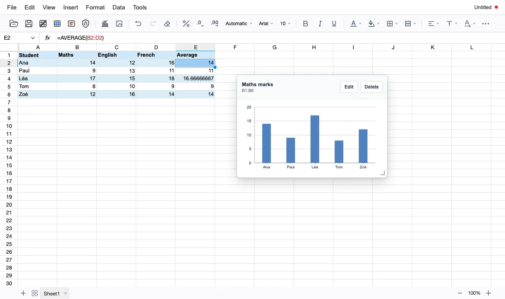

DocCells user manual
DocCells is a multilingual spreadsheet used in the browser, with nothing to install and no account. It opens and saves Excel workbooks (.xlsx).

The essentials in six actions
| To | Do this |
|---|---|
| Enter data | click a cell, type, Enter (entering data) |
| Calculate | type = then the formula: =AVERAGE(B2:B6) (formulas) |
| Copy a formula down | drag the blue handle of the selection, or Ctrl D (filling) |
| Format | Format menu, or the buttons (formatting) |
| Draw a chart | select the data, (charts) |
| Save | Ctrl S: an Excel file (opening and saving) |
Contents
- Opening and saving: files, recent files, recovery, Google Sheets, language.
- The interface: menus, buttons, formula bar, tabs, zoom.
- Entering data, selecting, copying, filling.
- Formulas, lists and complex numbers, named ranges, sheets.
- Number formats, formatting, conditional formatting, rows and columns.
- Sorting, filtering, finding, checkboxes, lists and calendar, charts and sparklines, images and links, printing.
- Protecting a workbook for students, sharing and embedding it, using it with DocGeo.
- Reference: the 314 functions, shortcuts, Excel compatibility, FAQ.
Conventions
- Buttons are shown by their icon ( bold).
- Ctrl means ⌘ on a Mac.
- Formulas are written as in English: English function names, decimal point, commas between arguments. DocCells shows them in the language of its interface.
- To search the manual: / or Ctrl K. The words can be typed in any order, without accents; a function's name leads to its row.